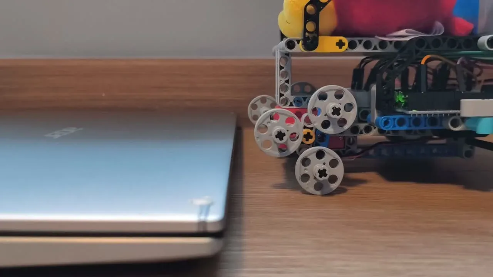
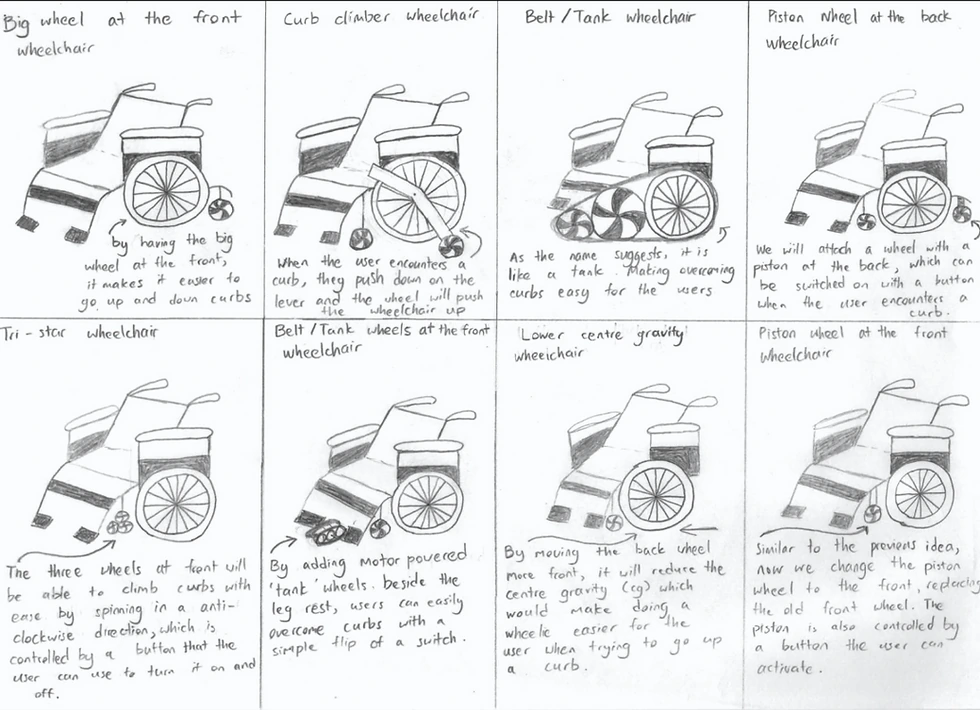
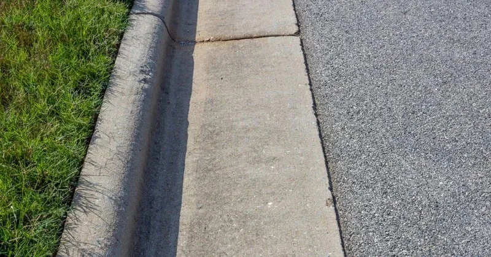

PROJECT 01 / ENGINEERING
Tri-Star Wheel Prototype.
Our team’s small-scale test of a motorised tri-star wheel attachment for climbing curbs.
Team project · electronics contribution
Project at a glance
Designed and wired the Arduino, switch and DC motor circuit; helped test the rotating prototype.
Arduino Uno · DC motorSmall-scale proof of concept only; not tested with a wheelchair user.

Project overview
Our group Tri-Star Wheel Prototype looked at a problem faced by self-propelled wheelchair users: getting past a curb when there is no nearby ramp. We explored a motorised tri-star wheel attachment as an alternative to the conventional front caster.
- The concept uses three small wheels around a rotating hub.
- As the assembly turns, a wheel can move onto a raised edge.
- We brainstormed different approaches through Crazy 8s, chose the tri-star arrangement and built a small-scale mechanism to test the idea.
- An Arduino Uno, slide switch and DC motor controlled the wheel assembly.
I worked on the circuit design and wiring, contributed ideas during brainstorming and helped check the connections during testing. The prototype demonstrated the rotating mechanism and motor circuit. It was not a full-size wheelchair tested with a person, so load capacity, materials and safety would still need further development.

The problem
Curbs can force self-propelled wheelchair users to look for a ramp or take another route. Our team explored a different front-wheel arrangement for getting over a raised edge.
The solution
The tri-star concept uses three wheels around a motor-driven hub in place of a conventional front caster. A slide switch sends an input to an Arduino Uno, which activates the DC motor.
Prototype demonstration
Our normal caster and tri-star prototype tests.
From the switch to the tri-star hub
Select a step to explore the workflow.
Slide switch
The slide switch signals that the wheel assembly should turn.
Design & development
A curb can force a wheelchair user to look for a ramp or take another route. This was the problem we chose for our engineering exploration project.
The diagram illustrates the rotating wheel idea. It is a concept view, not a full-size wheelchair test.

Concept sketches
Our original concept sketches. Open to view the full sheet.
We used Crazy 8s to sketch different ways of getting past a curb, then chose the tri-star arrangement for the prototype.
View the eight ideas we considered
- Larger front wheels
- A curb-climber lever
- A belt or tank-style wheelchair
- A rear piston wheel
- Tri-star front wheels
- Front belt or tank wheels
- A lower centre of gravity
- A front piston wheel
Wheel assembly
The wheel assembly we built for testing.

The curb challenge
The type of obstacle we were considering.
What I worked on
- Designed and wired the slide switch, Arduino Uno and DC motor circuit.
- Helped brainstorm the wheel concepts with the team.
- Checked the circuit connections and helped test the prototype.
The switch sends an input to the Arduino, which activates the DC motor to turn the wheel assembly.
Technologies
Results, limitations & next steps
The circuit activated the motor and our small-scale prototype demonstrated the rotating mechanism. We did not test a full-size wheelchair carrying a person.
Suitable materials, load testing and further mechanical and safety testing would be needed before anyone used a full-size version.